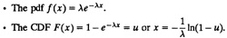
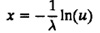
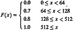
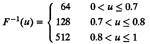
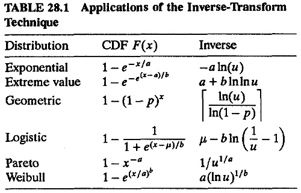
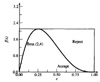

)
FIGURE 28.1 Inverse transformation of the CDF.
){kind=link}
Now we select g( ) such that g(x) = F(x), or y = F(x), so that y is a random variable between 0 and 1 and its distribution is given by
F(y) = F(F–1(y)) = y
| Previous | Table of Contents | Next |
A man with one watch knows what time it is.
A man with two watches is never sure.— Segal’s Law
There are a number of methods used to generate nonuniform variables. Each method is applicable only to a subset of the distribution. Also, for a particular distribution, one method may be more efficient than the others. In this chapter, some of the commonly used methods are described. Then, in Chapter 29, a list of distributions commonly used in computer systems modeling and their generation algorithms is presented.
This method is based on the observation that given any random variable x with a CDF F(x), the variable u = F(x) is uniformly distributed between 0 and 1. Therefore, x can be obtained by generating uniform random numbers and computing x = F–1(u), as shown in Figure 28.1. Let us first prove this observation.
Fy(y) = P(Y ≤ y) = P(x ≤ g–1(y)) = Fx(g–1(y))
FIGURE 28.1 Inverse transformation of the CDF.
Now we select g( ) such that g(x) = F(x), or y = F(x), so that y is a random variable between 0 and 1 and its distribution is given by
F(y) = F(F–1(y)) = y
f(y) = dF/dy = 1
That is, y is uniformly distributed between 0 and 1.
The preceding observation allows us to generate random variables with distributions for which F–1 can be determined either analytically or empirically. We present one example of each case.


The next example illustrates the use of the inverse-transformation method for a case in which the inverse is found empirically.
| Size (bytes) | Probability |
|---|---|
| 64 | 0.7 |
| 128 | 0.1 |
| 512 | 0.2 |
The CDF for this distribution is

The inverse of the CDF is

Thus, the packet sizes can be produced by generating a uniform random number between 0 and 1 and by comparing it with 0.7 and 0.8. If the number is less than or equal to 0.7, the packet size should be 64. If it is greater than 0.7 but less than or equal to 0.8, the packet size should be 128 bytes. If it is greater than 0.8, the packet size should be 512 bytes.
It should be pointed out that, by definition, the CDF is continuous from the right, that is, at any point where there is a discontinuity, the value on the right of the discontinuity is used. In Example 28.2, the CDF jumps from 0 to 0.7 at x = 64. The value at x = 64 is read as 0.7 (the value to the right of x = 64). Following this convention, the inverse function is continuous from the left. The inverse function is discontinuous at u = 0.7. However, if the random number generated comes out to be 0.7, the value of x to the left of u = 0.7, that is, x = 64, is used.
Inverse transformation is a powerful random-variate generation technique. Table 28.1 lists a number of distributions that can be generated using this technique. In each case, a U(0, 1) random number u is generated and the function listed under the “inverse” column is computed and returned as the desired variate. In the table, [·] is used to denote rounding up to the next integer.
A rejection technique can be used if another density function g(x) exists so that cg(x) majorizes the density function f(x), that is, cg(x) ≥ f(x) for all

values of x. If such a function can be found, then the following steps can be used to generate random variate x with density f(x):
The algorithm continues rejecting the random variates x and y until the condition y ≤ f(x) is satisfied; hence, the name of the technique.
The following example illustrates the rejection technique.
f(x) = 20x(1–x)3, 0 ≤ x ≤ 1
The function is shown in Figure 28.2. It can be bounded inside a rectangle of height 2.11. Therefore, we can use c = 2.11, and
g(x) = 1, 0 ≤ x ≤ 1
The beta (2, 4) variates can be generated as follows:
Steps 1 and 2 generate a point (x, y) uniformly distributed over the rectangle shown in Figure 28.2. If the point falls above the beta density function f(x), then step 3 rejects x.
The efficiency of the rejection technique depends upon the function g(x) and how closely it envelopes f(x). If there is a large area between cg(x) and f(x), then a large percentage of random variates generated in steps 1 and 2 are rejected. Similarly, if generation of random variates with g(x) is complex, this method may not be efficient.

FIGURE 28.2 Generating a beta distribution.
| Previous | Table of Contents | Next |
){kind=link}
){kind=link}